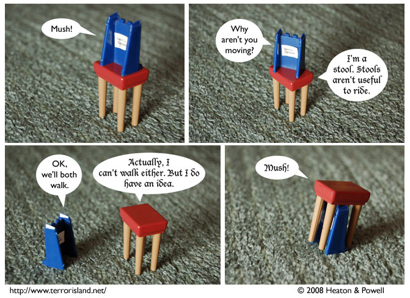

Strip #318
— Monday, June 23, 2008
The correct command to hasten a dentist is giddyup.
Notes, Thoughts, &c.
Ben’s Notes
I kind of worry about attempting sight gags in Terror Island, since my photography isn’t always up to the execution. But I think this one turned out pretty well.
Lewis’s Notes
Today’s comic is a subtle political allegory, much like a political cartoon. Unlike political cartoons, we don’t mollycoddle our audience by explicitly labeling the characters with the concept or group they represent. Readers are encouraged to debate and/or speculate as to the content of our message in the forums.